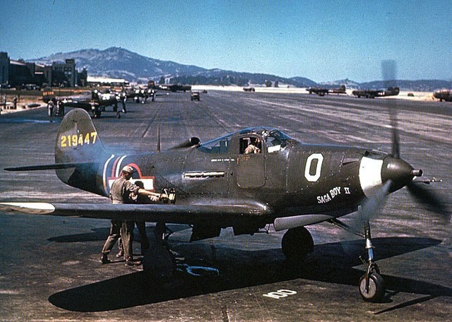
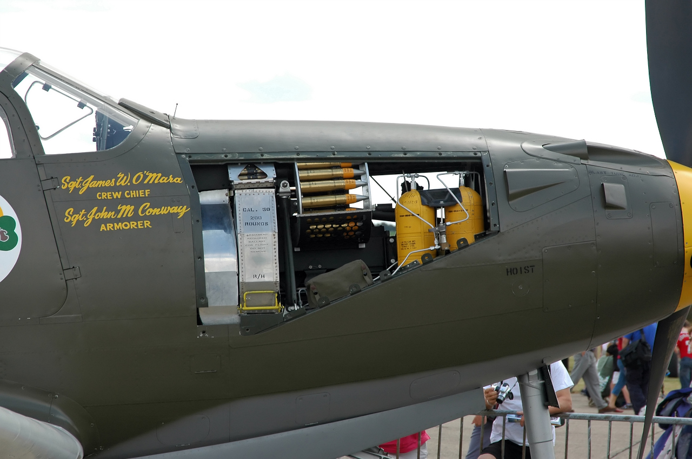
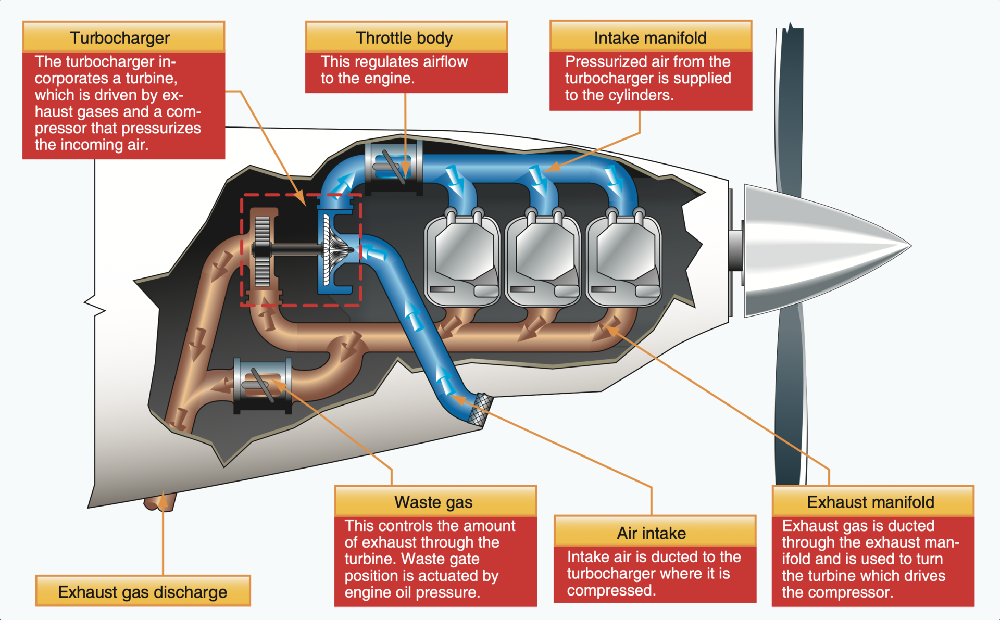
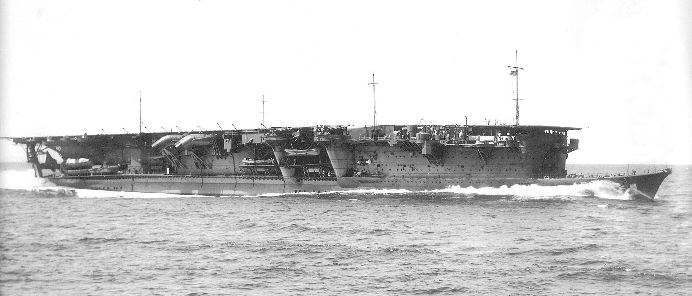
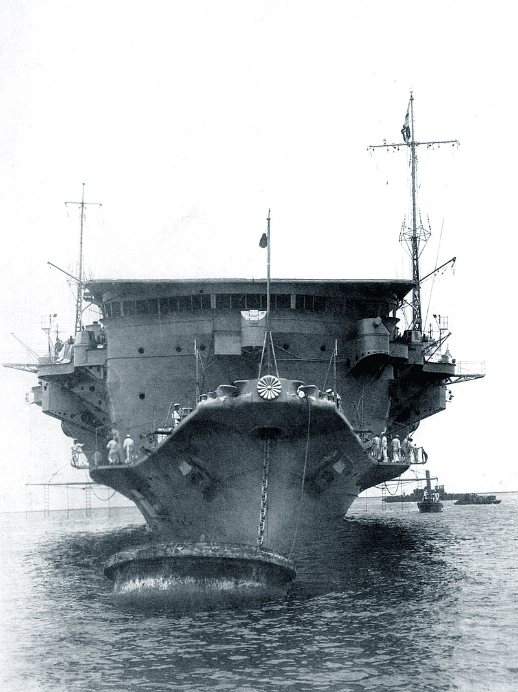
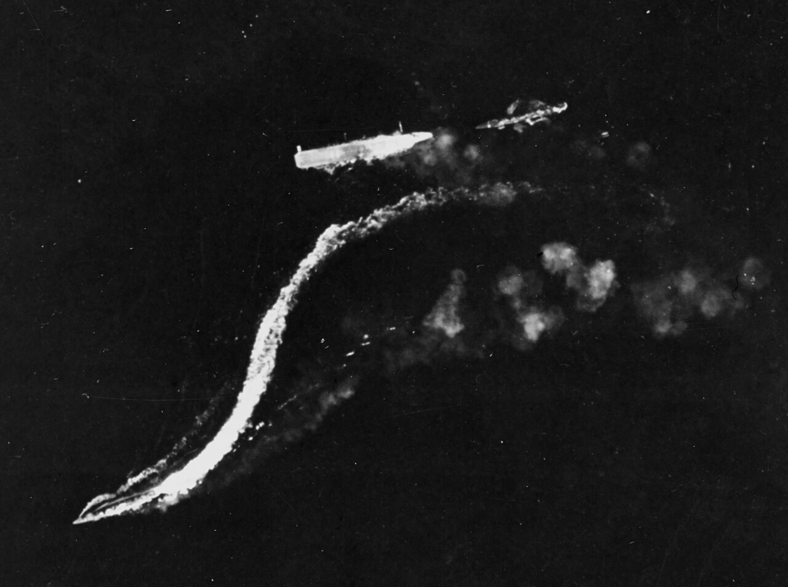
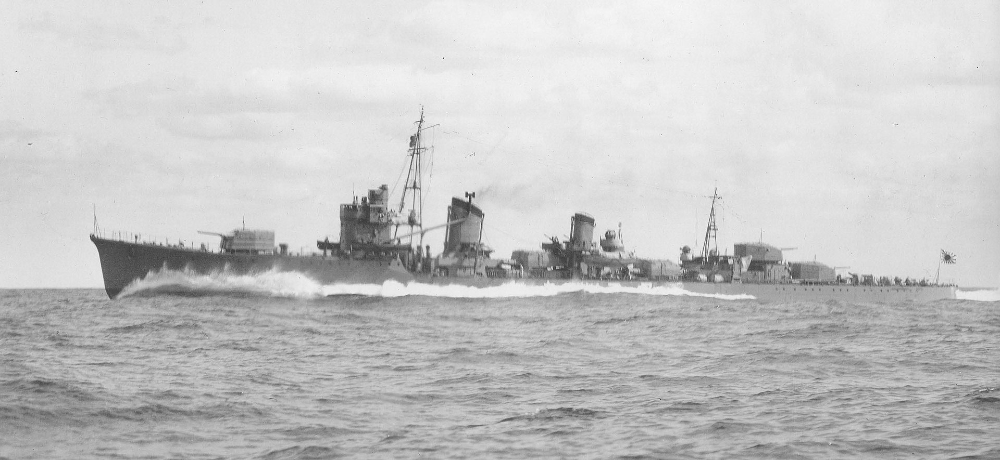

과달카날에서의 레이더 이야기 (6) - 미끼 항모
게시: 2024-03-14T06:30:08+09:00
<일본군 잡는 해병대> 8월 24일 오후 1시 20분, USS Saratoga의 레이더가 무려 150km 밖에서 포착한 대형 항공기 편대는 가만히 보니 사라토가 쪽으로 날아오는 것이 아니라 과달카날의 헨더슨 비행장을 향해 날아가고 있었음. 지난 편에 언급했던 일본해군 '베티' 폭격기는 결국 미해군 항모들을 보지 못했거나 봤어도 무전을 날리지는 못했던 것. 헨더슨 비행장에는 아직 레이더가 설치되어 있지 않았으므로 이 공습 사실을 모르고 있을 것이 분명. 사라토가에서는 헨더슨 비행장에 공습 경보를 주려고 했으나, 불안한 열대 대기층의 교란으로 인해 무선통신의 치직거림이 너무 심해 교신에 실패. 그러나 헨더슨에서도 완전 무방비로 있지는 않았고, 항상 상공에 4대의 해병대 소속 와일드캣을 CAP(Combat Air Patrol)으로 띄워놓고 있었음. 지상에는 언제든지 긴급 출격할 준비가 된 12대의 와일드캣을 추가로 대기시켰고, 거기에 더해 (육군 소속이라 별로 믿음직스럽지 못했지만) 육군항공대 소속 Bell Airacobra 전투기들도 여러 대 존재.

(Bell P-39 Airacobra. WW2 기간 중 서유럽 무대에서는 잘 사용되지 않아 성능이 나쁜 실패작처럼 인식되기 쉽지만 실제로는 매우 뛰어난 전투기였다고. 자동차처럼 옆문을 열고 조종사가 탑승하게 된 저 문짝이 인상적.)

(에어코브라는 엔진이 전투기 앞부분이 아니라 조종석 뒤에 설치된 매우 독특한 구조를 가지고 있었고, 덕분에 코 부분에 온갖 중무장을 설치할 수 있었음. 그러나 대신 동체에 연료탱크를 설치할 공간이 부족하여, 항속거리는 매우 짧아 편도 845km에 불과. 게다가 엔진에는 turbo-supercharger(과급기)가 없어 고고도에서의 성능이 크게 떨어졌음. 그래서 고고도로 비행하는 폭격기 주변에서 주로 공중전이 벌어지던 서유럽 무대에서는 설 땅이 없었음. 하지만 지상전 근접 지원을 위해 주로 저고도에서 공중전이 벌어지던 동부 전선에는 딱 맞는 전투기. 덕분에 소련 공군 에이스들 상당수가 랜드리스로 공급된 이 에어코브라를 이용하여 에이스가 되었음. 실제로 WW2 당시 생산된 모든 미제 전투기 중에 이 에어코브라가 가장 많은 kill 수를 기록했고, 그건 오로지 소련 조종사들 덕분.)

(Turbo-supercharger(과급기)란 별 것이 아니라 고고도에서 흡입되는 희박한 공기를 엔진의 배기 가스를 이용하여 압축한 뒤 엔진에 공급하는 압축 장치.) 오후 2시 15분, 부지런히 사방을 경계하던 해병대 CAP 전투기들이 마침내 북쪽 툴라기 방향에서 날아오는 일본 편대를 포착. 즉각 울려진 경보에 해병대의 와일드캣 10대와 육군 에어코브라 2대가 추가로 긴급 출격. 미군측은 이렇게 총 16대의 전투기. 당시에 미군은 몰랐으나, 쳐들어온 일본 항공기들은 경항공모함 류조(龍驤, 용양, 용이 머리를 쳐든다는 뜻, 1만톤, 29노트)에서 발진한 것들로서, 6대의 나까지마 B5N 'Kate' 뇌격기와 15대의 제로센으로 구성된 편대. 케이트 뇌격기엔 물론 어뢰 대신 일반 폭탄이 실려 있었음. 이렇게 지상 공격을 하러 오면서 폭격기보다 호위 전투기가 더 많은 편대를 보낸 이유는 특별한 것이 아니라 류조가 워낙 작은 경항모다 보니 폭격기를 많이 싣지 못하고 제로센을 주로 싣고 있었기 때문. 어차피 이들의 주목표는 헨더슨을 완파하는 것이 아니라 헨더슨의 대공포 진지들과 전투기들을 제압하여, 곧 이루어질 일본군 상륙에 대한 방해물을 제거하는 것.

(경항모 류조의 1934년 모습. 1922년 워싱터 해군조약에는 한가지 맹점이 있었는데 1만톤 이하의 항모는 항모로 간주되지 않아 규제 대상이 아니었던 것. 그래서 얍삽한 일본애들은 표준 배수량 8천톤을 목표로 서둘러 경항모를 건조했는데 그것이 바로 류조. 그러나 몇 년 뒤 체결된 1930년의 런던 해군 조약에서는 그런 맹점이 개정되었으므로 류조급 경항모는 딱 1대만 만들고 때려치움. 워낙 가볍게 만드는 것에 치중하다보니 사진에 보이는 것처럼 freeboad(수면에서 뱃전까지의 높이)가 매우 낮아 4.6m에 불과.)

(경항모 류조의 1933년 앞모습. 폭(beam)이 20m 정도인데 흘수(draft, 수면에서 뱃바닥까지의 깊이)는 5.56m에 불과. 보기에도 좀 불안정해보이는데, 실제로 전체 무게에 비해 상부가 너무 무거워 선박 안정성이 매우 좋지 않아서 1935년 대대적인 개장을 해야 했고, 그런 개장 뒤에 흘수는 7m 이상으로 더 깊어짐.) 이렇게 격돌한 미군 전투기 16대와 일본군 전투기 15대 및 뇌격기 6대의 싸움에는 라바울에서 날아온 6대의 베티 폭격기도 가세. 결과는 일본해군의 참패. 제로센 8대와 케이트 4대, 그리고 베티 6대가 격추되었고, 비행장에는 폭격 피해도 경미. 미군 손실은 와일드캣 3대뿐. 거만한 미해군 조종사들이 쩔쩔 매는 제로센을 상대로 대승을 거둔 이 전투로 인해 미해병대는 그야말로 기고만장해짐. 하지만 과달카날 일대의 미해군을 털러 오던 일본해군의 일진은 어디까지나 쇼가꾸와 즈이가꾸를 중심으로 한 함대였고, 류조는 일종의 미끼로 밀어 넣어본 별동대. 아직 미해군 항모전단의 위치를 파악 못한 상태에서 쇼가꾸와 즈이가꾸가 돌입하기엔 좀 무서우니까 먼저 류조를 보내서 미해군 항모전단을 발견하면 그걸 치고, 빌견 못하면 헨더슨 비행장을 치라며 등을 떠민 것. 류조에 대해서는 호위함도 구축함 2척과 중순양함 토네 밖에 없었는데, 심지어 이 별동대의 기함도 류조가 아니라 토네였음. 일본해군에서 류조는 사실상 소모품으로 취급. 당연히 조종사들도 상대적으로 경험이 적은 조종사들을 보냈으므로 미해병대 조종사들과의 싸움에서 험한 꼴을 당했던 것. 게다가 결정적으로... 실제로 격추된 류조의 함재기는 제로센 3대와 케이트 4대뿐. 역시나 해병대든 해군이든 전투기 조종사들의 주장은 걸러 들어야 함. 그러나 저렇게 살아돌아간 제로센과 케이트들의 신세도 과히 바람직하지는 못했음. <레이더가 항모도 잡는다> 류조의 함재기들이 헨더슨 비행장을 때리러 날아간 사이, 류조는 위험한 과달카날 인근 해역에서 초조하게 함재기들이 무사히 임무를 마치고 돌아오기를 기다리고 있었음. 그 일대가 위험한 이유는 근처에 미해군 항모들이 어슬렁거리고 있을 것이기 때문. 류조는 언제 어디서 미해군 함재기들이 들이닥칠까 조마조마해 하며 하늘을 열심히 쳐다보았으나, 실은 이미 대략의 위치를 이미 들킨 상태였음. 류조에서 이함하여 헨더슨 비행장으로 날아오는 일본기들의 항적이 사라토가의 CXAM 레이더에 자세히 찍히고 있었던 것. 그렇게 방향을 알아낸데다 제로센의 긴 항속거리를 이미 알고 있던 미해군은 일본 항모가 어디쯤 있겠다고 어렵지 않게 짐작. 그 방향으로 파견된 여러 정찰기들이 류조의 존재를 쉽게 파악해낸 뒤, 사라토가의 돈틀리스 31대와 어벤저 8대를 출격시킴. 다만 거리가 너무 멀었으므로 호위 전투기는 함께 가지 못함. 그렇게 호위 전투기가 없었음에도 미해군 함재기들은 대부분의 제로센들을 호위기로 딸려보낸 뒤라 CAP을 쳐줄 전투기가 5대 밖에 없던 류조를 꽤 쉽게 타격. 류조를 지키던 제로센의 조종사들도 기량이 다소 떨어지는 친구들이었는지 단 한 대의 미해군 함재기도 격추시키지 못함. 몸부림치다 1000파운드 짜리 폭탄 3방과 어뢰 1방을 얻어맞은 류조는 화재와 침수로 인해 결국 침몰.

(이 사진은 이미 류조가 자력 항해를 못하고 침몰하고 있는 상황에서 그 위를 덮친 B-17 폭격기에서 촬영한 것. B-17 폭격기들은 이 불쌍한 앉은뱅이 항모에게 최후의 일격을 가하겠다면서 고고도에서 폭탄을 투하. 하나도 안 맞았음. 류조 아래에 보이는 또렷한 파도는 B-17의 폭탄을 피해 저 혼자라도 살겠다고 구조 작업을 포기하고 맹렬히 달려 도망치는 구축함 아마쯔까제. 류조 오른쪽에 보이는 것은 그래도 좀 의리를 지켜 슬금슬금 후진하며 도망치는 구축함 도끼쯔까제.)

(저렇게 생존 본능이 강력했던 구축함 아마쯔까제(天津風, 하늘나루의 바람이라는 뜻, 2천5백톤, 35노트)가 과연 어떤 최후를 맞았는지 궁금해서 찾아보니, 정말 전쟁 거의 말엽까지 살아남았음. 1945년 4월, 운이 다했는지 중국 복건성 해안에서 미군 B-25 폭격기들의 저공 공격을 받았는데, 끝까지 살아보겠다고 맹렬히 반격하며 도망쳐 폭탄을 쳐맞으면서도 B-25 2대를 격추하고 기어이 해변까지 가서 좌초시킴. 승조원들 상당수 생존. 이틀 뒤 폭발물을 설치하여 자폭. 역시 살려고 기를 쓰면 살 수 있음.) 문제는 헨더슨 비행장을 치러 갔다 살아서 돌아온 14대의 제로센 및 케이트. 연료가 이미 거의 다 떨어진 이들을 기다리고 있는 것은 바다에 뛰어든 승조원들을 건져내고 있는 일본 구축함들. 결국 이들도 두어 바퀴 선회하다 차례차례 해면에 불시착. 케이트에는 2명씩 타고 있었으므로 총 16명이 불시착한 셈인데 그 중 구조된 것은 7명에 불과. 그러나 미해군 항모전단도 일본 항모를 잡았다고 기뻐할 때가 아니었음. 역시나 류조는 미끼였을 뿐. 쇼가꾸-즈이가꾸의 눈 역할을 해주던 중순양함 치쿠마의 정찰용 장거리 수상기가 드디어 미해군 항모들을 눈으로 확인. 엔터프라이즈의 레이더가 그 수상기를 포착하고 재빨리 요격기를 보내 격추했으나, 이번에는 그 수상기가 격추 직전에 뭔가 무전을 쳐대는 것이 엔터프라이즈에서도 또렷이 포착되었음. 드디어 들킨 것. 아직 미해군 항모들은 쇼가꾸-즈이가꾸의 위치를 모르는 상태. 한마디로 새된 상황. (다음주에 계속)